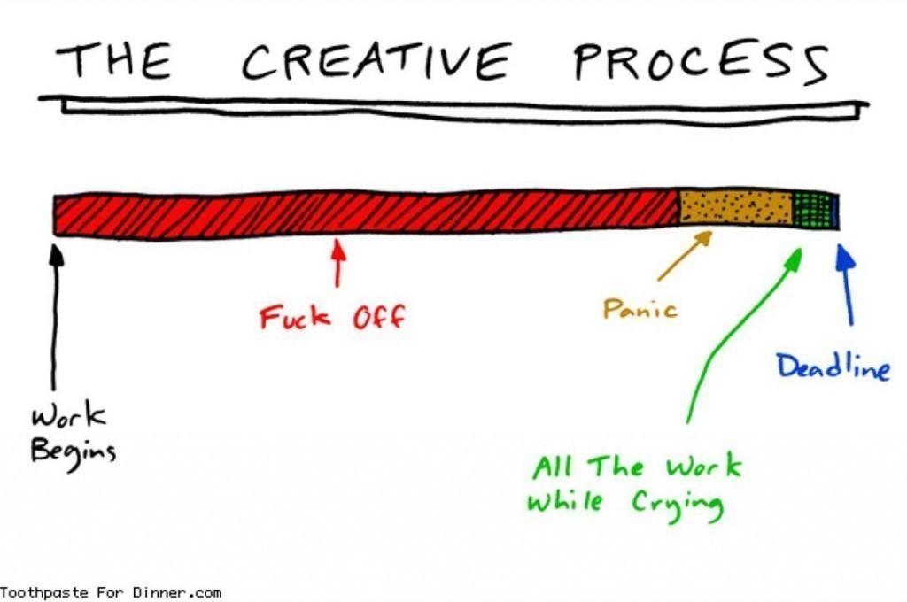
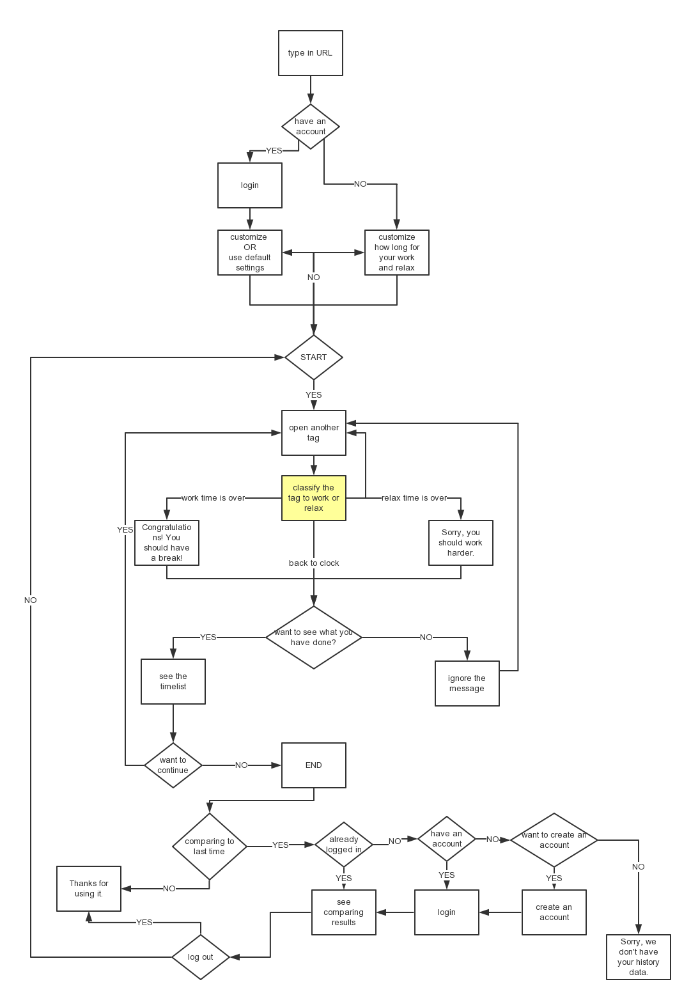
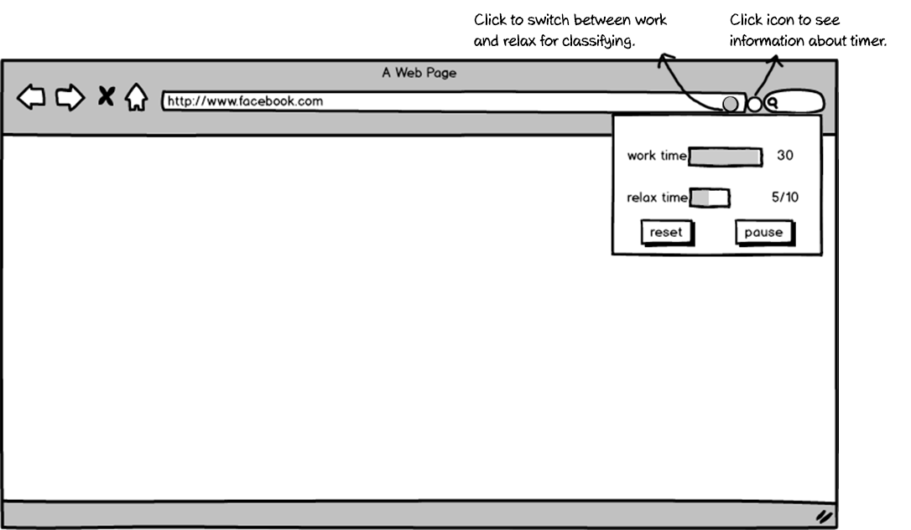

You might be familiar with this scenario, you are browsing the Facebook, having your new project plan in mind which dues by Monday, and you still feel not ready to start.
 Telling procrastinators “Be practical” or “Just do it” is like telling junk-food lovers “Don’t eat fried chips”. Based on the researches, I realized that it’s more like a habit involving psychology problem than a design question that I can solve. So I set a step back to help people with avoiding the troubles that procrastination brings so that the fear and pressure would be less which let the virtuous circle continues.
After considering the platform that I could exploit best, the target users were narrowed down to those who worked on laptops and had a clue about what to do.
Psychologist Shawn Achor and his Ted talk — The happy secret to better work inspired me with another perspective to see why people procrastinate. If a person sets a plan based on his best behavior and takes it as a qualified line, no wonder he fears to start it.
People love games. Obviously, breaking work into specific steps and making that a game is a good idea, but the game design part would swallow a lot determinations. So the solution should have a more simple game system.
So I chose to create a chrome extension to encourage users to get more time to work. Users don’t need to be productive, they just need to do things related to work, including easing nerves about upcoming work. And users need to earn relax time by devoting working time. The ratio of working time and relax time are set by users.
I did early state design following the chrome extension development guide. The extension let users classify their tabs by clicking the icon with the color switching.
I did a user test on paper prototype to figure out how frequently and under what circumstances people are comfortable to interact with the timer. Based on the results, it made most sense that the color of the icon would follow the former one until user change it.
Chrome allows one object per extension to interact with which gave me one more challenge for my design. At first I designed two part for two function, one was for clarifying tabs, the other was for more information about the timer.
Since the smoothness is a kin user experience which depends on the codes, the design shouldn’t bring any burden, it should be clear and light. I adjusted the design while doing research for the similar functions on Stack Overflow.
I have a team for this project now, one developer helping me with building the extension, and other three as “professional” and picky user testers for feedback and supervise. Codes for this project can be found on GitHub.
By the way, making your individual project as a team project is an efficient way to fight against procrastination.